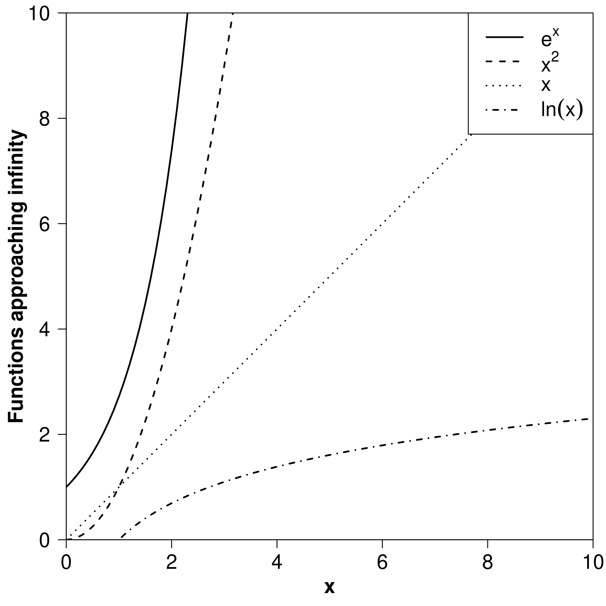
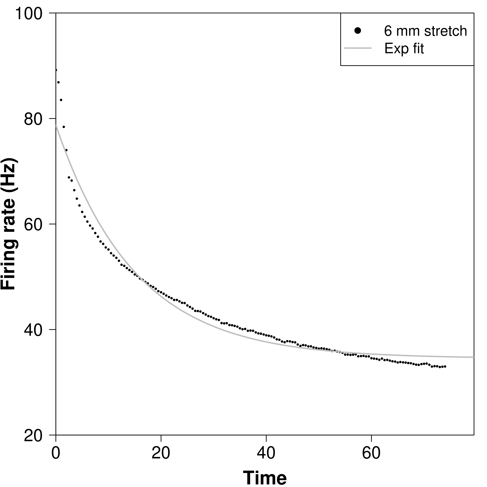
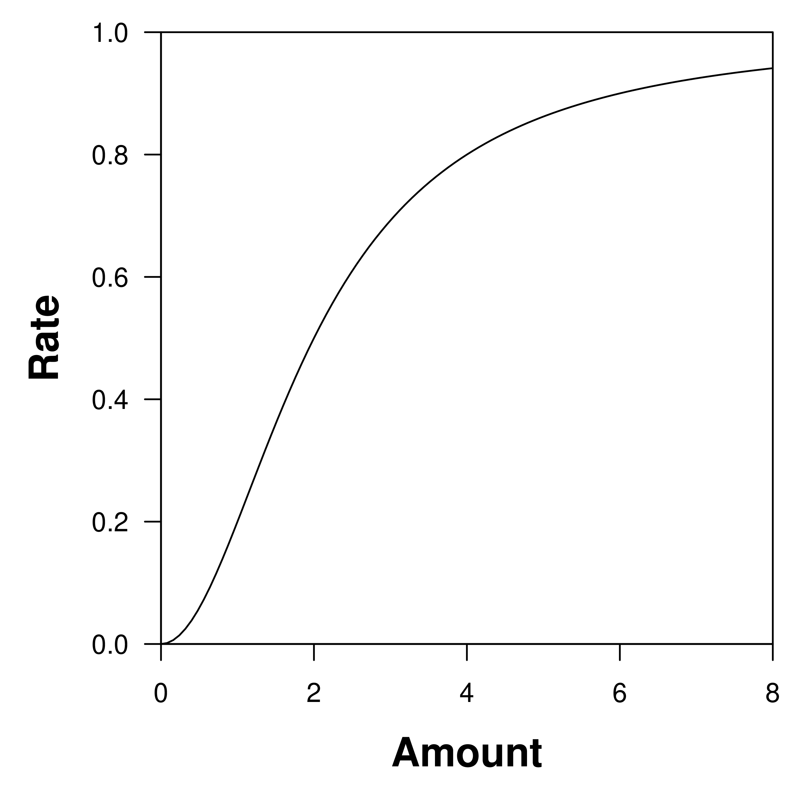

Section 1.9 Limits and behaviors at infinity
The Plan.
We will look at a powerful method for studying and describing the long-term values and behaviors of functions. This will give us a powerful, compact notation for making precise descriptions.
Limits and long-term behavior.
Rather than talking about limits at a finite input, we now focus on limits as inputs become infinitely large
\begin{equation*}
\lim_{t\rightarrow\infty}f(t).
\end{equation*}
In the long run (or \(t\rightarrow\infty\)), functions can have only a few qualitatively different behaviors that describe how they approach their limiting value.
Real-world example from research.
A neuroscientist interested in the response of muscle fibers to stress measures the firing rate of a stretched (and stressed) muscle fiber through time. She presented the following data:

If this was your data, what function would you use to describe it?
After quite a while, what value would the firing rate likely approach?
Expanding our library of functions.
So far we have focused on polynomials (lines, quadratics, cubics, and so on), exponential and logarithmic functions, and sums, products, ratios. and compositions build from these.To better understand these functions and few new ones, we compare their behaviors for large inputs.
Functions approaching \(\infty\text{,}\) ordered by speed.
Below we consider constants \(a, \beta, n >
0\) to help build larger categories of functions.
| Function | Features |
|---|---|
Sketches of these functions:
Suppose \(\displaystyle
\lim_{x\rightarrow\infty}f(x) = \infty \text{ and
}\lim_{x\rightarrow\infty}g(x) = \infty.\)
- \(f(x)\) approaches infinity (or \(f(x)\rightarrow\infty\)) faster than \(g(x)\) if \(\displaystyle \lim_{x\rightarrow\infty}\frac{f(x)}{g(x)} = \infty\)Ex.
- \(f(x)\) approaches infinity (or \(f(x)\rightarrow\infty\)) slower than \(g(x)\) if \(\displaystyle \lim_{x\rightarrow\infty}\frac{f(x)}{g(x)} = 0\)Ex.
- \(f(x)\) approaches infinity (or \(f(x)\rightarrow\infty\)) at the same rate as \(g(x)\) if \(\displaystyle \lim_{x\rightarrow\infty}\frac{f(x)}{g(x)} = \text{nonzero constant}\)Ex.
Functions approaching 0, ordered by speed.
Below we consider constants \(a, \beta, n >
0\) to help build larger categories of functions.
| Function | Features |
|---|---|
Sketches of these functions:
Suppose \(\displaystyle
\lim_{x\rightarrow\infty}f(x) = 0 \text{ and
}\lim_{x\rightarrow\infty}g(x) = 0.\)
- \(f(x)\) approaches 0 (or \(f(x)\rightarrow0\)) faster than \(g(x)\) if \(\displaystyle \lim_{x\rightarrow\infty}\frac{f(x)}{g(x)} = 0\)Ex.
- \(f(x)\) approaches 0 (or \(f(x)\rightarrow0\)) slower than \(g(x)\) if \(\displaystyle \lim_{x\rightarrow\infty}\frac{f(x)}{g(x)} = \infty\)Ex.
- \(f(x)\) approaches 0 (or \(f(x)\rightarrow0\)) at the same rate as \(g(x)\) if \(\displaystyle \lim_{x\rightarrow\infty}\frac{f(x)}{g(x)} = \text{nonzero constant}\)Ex.
Summary of behaviors as \(x\to \infty\).
The following plots illustrate the basic shapes of functions that are important when discussing their limits at infinity.

| Function | Family | Features |
|---|---|---|

| Function | Family | Features |
|---|---|---|
Recall the earlier example of the stretch response of muscle fibers. Below we show a computer-generated ‘best fit’ to the data and illustrate important biological and statistical differences of the speeds of functions.
Data fit by the sum of a constant and an exponential function,
\begin{equation*}
f(t) = ae^{-bt}+c.
\end{equation*}

Description:
Data fit by the sum of a constant and the composition of a power function with exponential function,
\begin{equation*}
f(t) =
ae^{-bt^m}+c.
\end{equation*}

Description:
In ecology we use these functions to describe the numerical response of predators to prey or of harvesters to their crop. In chemistry we use these functions to describe rates for reaction kinetics, for example, Michaelis-Menten Kinetics. Forms generally have the following features,
Linear
Saturating
Saturating (with threshold)
Overcompensation
Leading behavior.
The often useful method of leading behavior helps us approximate complicated functions by their most dominant terms. This tells us what the graph of a complicated function ‘looks like’.
The leading behavior of a function at \(\infty\text{,}\) written \(f_\infty(x)\text{,}\) is the term that is largest as the input approaches \(\infty\text{.}\)
- Find \(g_\infty(x)\) for \(g(x) = 1+2x+3e^x.\)
- Find \(f_\infty(x)\) for \(f(x) = 4+x^{2}\text{.}\)
The leading behavior of a function at 0, written \(f_{0}(x)\text{,}\) is the term that is largest as the input approaches 0.Note: This often contradicts our initial intuition for ‘big’.
- \(f(x)\) is larger than \(g(x)\) as \(x\) approaches 0 if \(\displaystyle \lim_{x\rightarrow0}\frac{f(x)}{g(x)} = \infty\)
- \(f(x)\) is smaller than \(g(x)\) if \(\displaystyle \lim_{x\rightarrow0}\frac{f(x)}{g(x)} = 0\)
- Using the ideas of larger and smaller, find \(g_{0}(x)\) for \(g(x) = 4x+x^{3}.\)
- Using the ideas of larger and smaller, find \(f_{0}(x)\) for \(f(x) = 4+x^{2}.\)
Compute \(\displaystyle
\lim_{x\rightarrow\infty}\frac{1+2x+3e^x}{4+x^{2}}.\)
Formal justification.
All of our discussion might seem quite suspicious and inexact.
- Limit of a ratio is the ratio of limit, when limits are finite values.
- Earlier rules for limits fail when limits are infinite; we cannot do the arithmetic with infinities.
- We can use reasoning about relative speeds of different terms or need more advanced techniques.
Important facts.
A function and its leading behavior approach \(\infty\) at the same rate, or \(\displaystyle \lim_{x\rightarrow
\infty}\frac{f(x)}{f_\infty(x)} = 1.\) Also the leading behavior of a function defined by a ratio, such as \(\displaystyle F(x) =
\frac{x^{2}}{4+x^{2}}\) is defined as the ratio of the leading behaviors \(\displaystyle F_{0}(x) = \frac{(x^{2})_{0}}{(4+x^{2})_{0}}\) or \(\displaystyle F_\infty(x) =
\frac{(x^{2})_\infty}{(4+x^{2})_\infty}\)
We illustrate this method by example using the function \(\displaystyle F(x) = \frac{x^{2}}{4+x^{2}}\text{,}\) one example of functional form from earlier.

What does \(F(x)\) look like when \(x\) is very large?
What does \(F(x)\) look like when \(x\) is small?
Subsection 1.9.1 Quick practice
- Compute \(\displaystyle \lim_{x\to\infty} e^{x}\text{.}\)
- Compute \(\displaystyle \lim_{x\to\infty} e^{-x}\text{.}\)
- Compute \(\displaystyle \lim_{x\to\infty} \dfrac{1}{x}\text{.}\)
- Which is bigger as \(x\to\infty\) \(e^{-x}\) or \(\dfrac{1}{x}\text{?}\) Hence, what is \(f_\infty(x)\) for \(f(x) = e^{-x}+\dfrac{1}{x}\text{?}\)
Answers:
- \(\displaystyle \lim_{x\to\infty} e^{x} = \infty\text{.}\)
- \(\displaystyle \lim_{x\to\infty} e^{-x} = 0\text{.}\)
- \(\displaystyle \lim_{x\to\infty} \dfrac{1}{x} = 0\text{.}\)
- Between the terms \(e^{-x}\) and \(\dfrac{1}{x}\text{,}\) \(e^{-x}\) goes to zero faster which implies that \(\dfrac{1}{x}\) is bigger as \(x\to\infty\text{.}\) Hence, for \(f(x) = e^{-x}+\dfrac{1}{x}\text{,}\) the leading behavior at infinity is \(f_\infty(x) = \dfrac{1}{x}\text{.}\) This means the contribution of the exponential term to the graph of \(f(x)\) vanishes quickly and the graph ‘looks like’ the graph of just \(f_\infty(x) = \dfrac{1}{x}\) as \(x\) gets large.